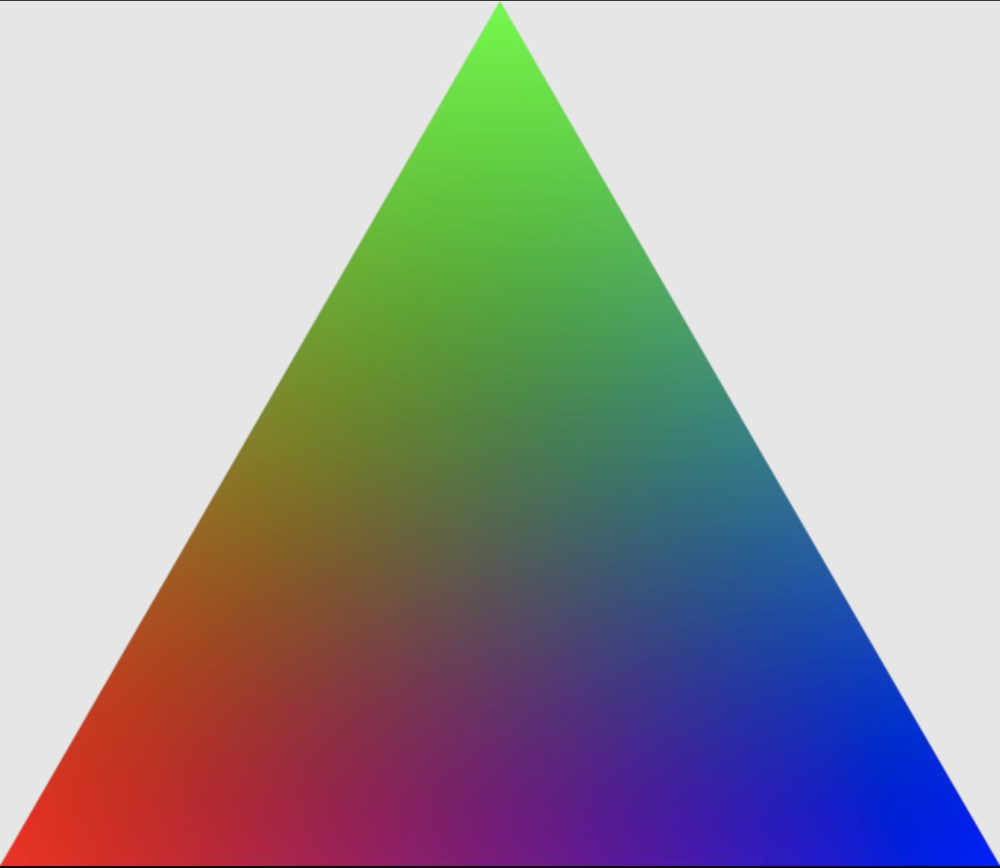

Overview
Jumping in headfirst to computer graphics, I started by implementing a simple rasterizer for SVG file format images. The project divides into two main parts: rasterization and sampling. Rasterization involves taking a vector graphics format lke an SVG file and converting that description into an image, shown as a series of points, lines, and triangles. Sampling involves two components: pixel sampling and level sampling. Pixel sampling finds the color to fill each pixel. I However, since shapes in the image may be transformed from those in the original texture map, there may no longer be a 1:1 mapping between the pixels in the image and the texels in the texture image. We employ mipmaps to adjust the resolution of texture image that we sample from in order to reduce aliasing when sampling the image's colors.
One the most interesting things I learned during this project is of the different techniques that create "blur" in an image. I'd imagined that the image resolution was the only piece that mattered but I understood that in graphics, an image's appearance has to do with display image size, pixel size, and frequency of details in the image. I also learned how to code in C++ better.
Section I: Rasterization
Part 1: Rasterizing single-color triangles
A triangle is rasterized given its three vertices and fill color, which are derived from the SVG class representatiion of the SVG files. The vertices are given as pixel locations within the framebuffer, which holds as many pixel values as there are in the displayed image. I first ensure that the vertices fall within the image's dimensions, returning without rasterizingg the triangle if this is not the case. From there, we have to figure out which points on the screen need to be filled in with the triangle's color. To do this, we perform three line equation tests for the three edges that make up the triangle, which forms the basis for the Point-In-Triangle algorithm. We can find the vectors for each edge by subtracting two vertices: [X_i+1 - X_i, Y_i+1 - Y_i]. From there, we can find the normal vector to the edge: [- (Y_i+1 - Y_i), X_i+1 - X_i]. We know that any point that lies on this edge [X_i+1 - X_i, Y_i+1 - Y_i], when taken as a vector starting from (X_i, Y_i), will have a dot produt of 0 with the normal vector. Similarly, all points that lie on on side of the edge will have a negative dot product with the normal vector, and positive on the opposing side. Using this, we adopt a direction to iterate through the points, then check if a point is on the same direction of all 3 edges. This means its vector dot product with all three normal vectors has the same sign. If this holds true, we know that the point is enclosed by the vertices, and color it accordingly.
To speed up the algorithm, I only check the vertices that are between the maximum triangle vertex index and minimum triangle vertex index, finding these bounds independently for the x and y dimensions. This allows me to create a bounding box around triangle and limit the number of points that I check during the Point-In-Triangle test.
Below is a rasterization of a few triangles using this method.
Part 2: Antialiasing triangles
Supersampling is a spatial antialiasing technique that sets a pixel value to the average value of several pixel subsamples. As seen above, when sampling only once for each pixel value, we may miss details in high frequency areas, because we can only represent spatial frequencies at a maximum of half our sampling rate, according to the Nyquist sampling theorem. This is a phenomena known as aliasing, and can be seen above in the Part 1 triangle rasterization-- we don't sample frequently enough to capture the high frequency details in the corners of the more acute triangles. We also notice that the triangle edges that we intended to be smooth appear jagged-- these are known as "jaggies." Supersampling samples multiple times within a single pixel within a larger sample framebuffer, and sets the pixel in the screen framebuffer to the average of all the colors from the subpixels before rendering. As a result, we get a slightly "blurrier" appearance, but pixel's are able to more closely represent edges and an area's true color. In my implementation, supersample rates are square numbers, allowing me to sample each pixel sqrt(supersample_rate) times across its width and height. This means that the sample framebuffer I read the samples into will be lengthier by a factor of the sample_rate. I modified my triangle rasterization algorithm to add two more iterations through the subpixels for each pixel that we test. After obtaining the x, y location for each pixel, I then iterate through every subpixel location, adding a new color to the sample framebuffer for each subpixel. Then, when DrawRend::redraw calls resolve_to_framebuffer(), I downsample the sample framebuffer of the rasterizer to the size of the screen framebuffer, averaging sample_rate number of sample framebuffer pixels to get each screen framebuffer value. This creates a blur effect for the finer details in the image, as seen below. Below, for a sample_rate of 1, we see discontinuities in the corner because information is lost when sampling. For the higher sampling rates that have then been downsampled, we have some idea of what we are missing when we lose the higher frequencies because it appears blurred.
|
|
|
|
Part 3: Transforms
Below is a happy Valentine's Day cubeman decked out in pink and waving excitedly at his boo. I created new shapes and scaled and positioned them on the head to create two eyes. I placed these below the head so they would show up above the face in the image. I also rotated cubeman's arms and translated them to give the appearance that he has hands in the air.
Section II: Sampling
Part 4: Barycentric coordinates
Barycentric coordinates allow us to linearly interpolate values at the vertices of a triangle. When we calculate Barycentric coordinates, (x,y) coordinates are translated into in the barycentric coordinates (alpha, beta, gamma)). These three coordinates sum to one, and increasing the weight of any of the coordinates increases the weight of its respective vertex. For example, the three vertices in Barycentric coordinates are given by (1, 0, 0), (0, 1, 0), and (0, 0, 1). By linearly interpolating the vertex colors using the Barycentric coordinates, we can find a weighted average color for any coordinate within the triangle. The result for an RGB triangle is shown below. While the corners are pure R, G, and B colored, the halfway point along each edge is a pure mix of just two RGB pure colors. For example, the bottom of the triangle is 0.5R, 0.0G, 0.5B, appearing as a pink. Similarly, the rest of the triangle is weighted average of these colors depending on a coordinate's spatial location in relation to the triangle's vertices.
We used barycentric coordianates to interpolate a spectrum of displayable colors, with black in the center, shown below.
Part 5: "Pixel sampling" for texture mapping
Pixel sampling draws triangles based on a technique called texture mapping. Each vertex corresponds to a coordinate location within a texture image, and we can sample the color at that coordinate location to apply it our displayed image. However, the screen's pixel space doesn’t necessarily map 1:1 to a texture space; different pixels may have differently sized texture footprints in the texture space. In my implementation, rasterize_textured_triangle is given xy coordinates of the triangle in screen space, as well as the corresponding uv coordinates in the texture space as a fraction of the texture image size (between 0 and 1). I can use these triangle vertices in screen space to find the Barycentric coordinates of any location inside the triangle, just as we did in rasteize_triangle. I then use those Barycentric weights to find the uv texture coordinates corresponding to each pixel coordinate that we are iterating through. For this part, we start with the highest resolution texture image, but after implementing mip-maps, the texture image may have a different size depending on the level we are sampling from. Thus, the first step is to scale the uv coordinates by the texture image width and height to convert them to texel space. Since the mapping isn't 1:1, these won't always correspond to an exact texel coordinate. I implemented two different methods to resolve this: nearest pixel sampling and bilinear interpolation sampling. Since the texture map is indexed by integer location, the nearest pixel rounds the rescaled uv interpolated coordinate to the nearest integer coordinates. This may result in a jaggy final image, similar to how high frequency details were aliased with a low sample_rate in Task 1. Bilinear interpolation resolves this in a similar matter to super sampling, but weights the four nearby texel colors based on their proximity to the scaled uv coordinate. The result is a smoothed, but blurrier version of the image, as the colors displayed in the pixels of the final image are the weighted averages from several texels.
|
|
|
|
|

|
In the images above, it is clear why bilinear sampling is superior to nearest neighbor sampling. In the top left, when we have a sampling rate of 1 and do nearest pixel sampling, we see sharp changes in colors that makes the image appear jagged. Supersampling with a sampling rate of 16 helps, but only to an extent. The color changes are softer, but there are still blocks of color that we can see, creating a very uneven appearance. Bilinear sampling creates a smoothed look, even with a sampling rate of 1. This is because we're not missing as many texels in the texture image in the displayed image-- more texels are represented as they are weighted together in the colors of the pixels that are shown. Increasing sampling rate to 16 here doesn't have a huge effect here, because we're already interpolating multiple texel values. However, we find that it does soften some of the colors. There will be the largest different between the nearest pixel and bilinear sampling when the screen space pixel has the largest texture space footprint, or in an area with high frequency changes (such as lettering). In this case, bilinear sampling is most useful to us.
Part 6: "Level sampling" with mipmaps for texture mapping
Level sampling accounts for aliasing when sampling a texture image by reducing the resolution of the texture image we are sampling from. It averages nearby pixels together to create a texture image that is low pass filtered. We use the highest resolution texture image as level 0. From there, we continuously downsample and average pixels to create a stack of texture images at increasingly lower resolutions. This stack is known as a mipmap and takes up 4/3 the amount of storage as the original high resolution texture image. We decide on which mip map level to sample from based on the dimensions of the screen pixel footprint in texture space. If a screen pixel is stretched over many texels in the texture space, it is more likely to alias if we sample from a single texel. Thus, in this situation, we would want to sample from a lower resolution mip map level, so that the screen pixel footprint mostly spans a single texel. On the other hand, if a screen pixel is relatively 1:1 with a texel, we can sample from a higher resolution mip map level.
Below, I visualized what these mip map levels look like for one of the test images.

|
|
|
The three level sampling techniques have various tradeoffs. Zero level sampling uses the least memory if we don't create a mipmap, because we only need to store the highest resolution texture image. Nearest level combats antialiasing by using the texture level with an appropriate resolution. However, we see from above that there are distinct falloffs, which can create discontinuities in the displayed image. It has a greater memory impact than zero level by 4/3, because we need to store the mipmap. Trilinear interpolation interpolates the texel values between two levels together, creating a more smoother image. However, it is more computation intensive than nearest level, because we take into account texel values at two different mip map levels. Thus, it is the slowest method with the greatest anti-aliasing power.

|
|
|
|
|
This website is linked at https://cal-cs184-student.github.io/sp22-project-webpages-sravyab36/proj1/index.html